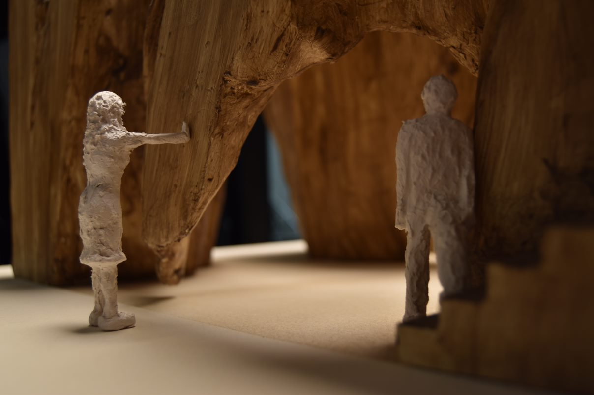
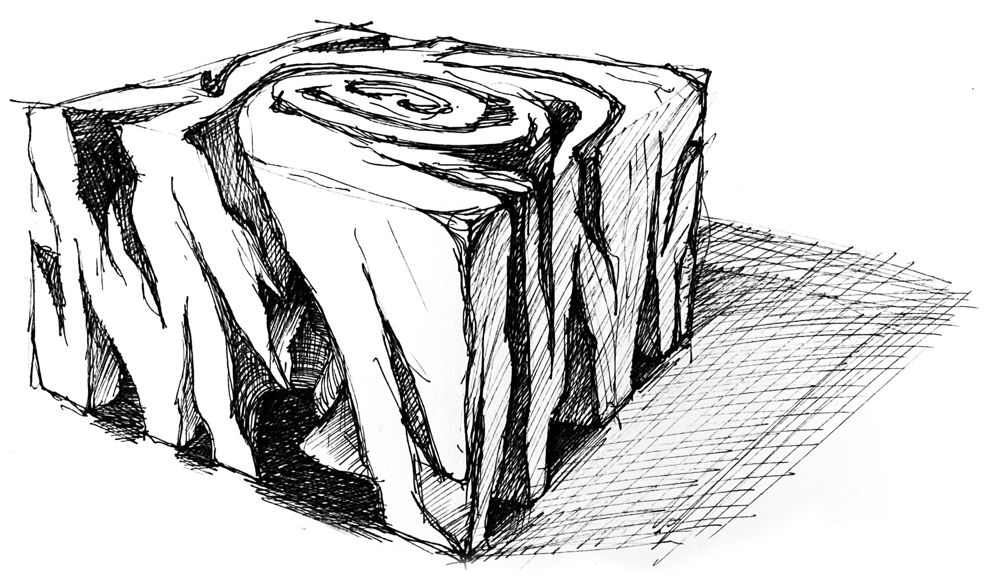
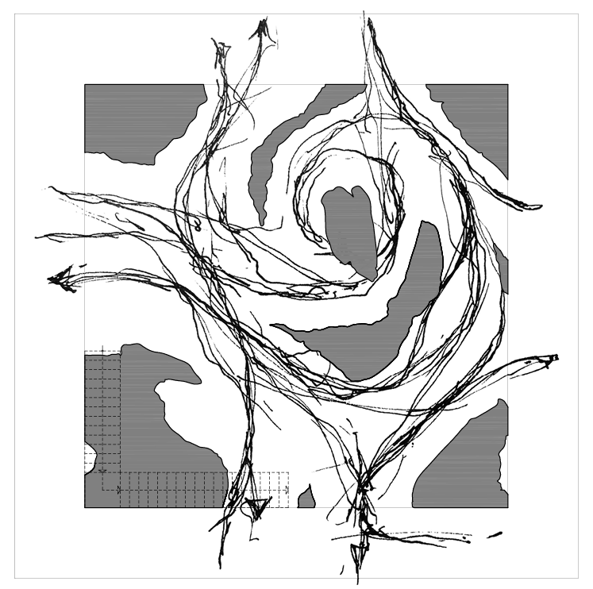
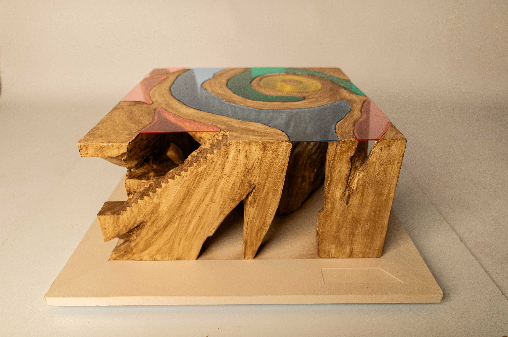
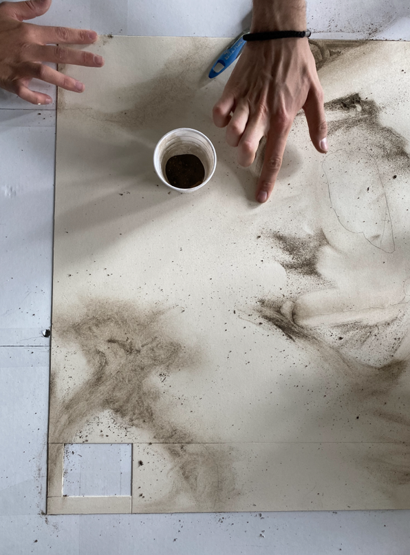
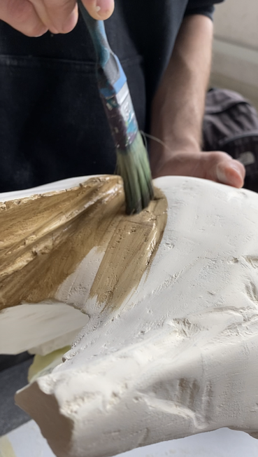
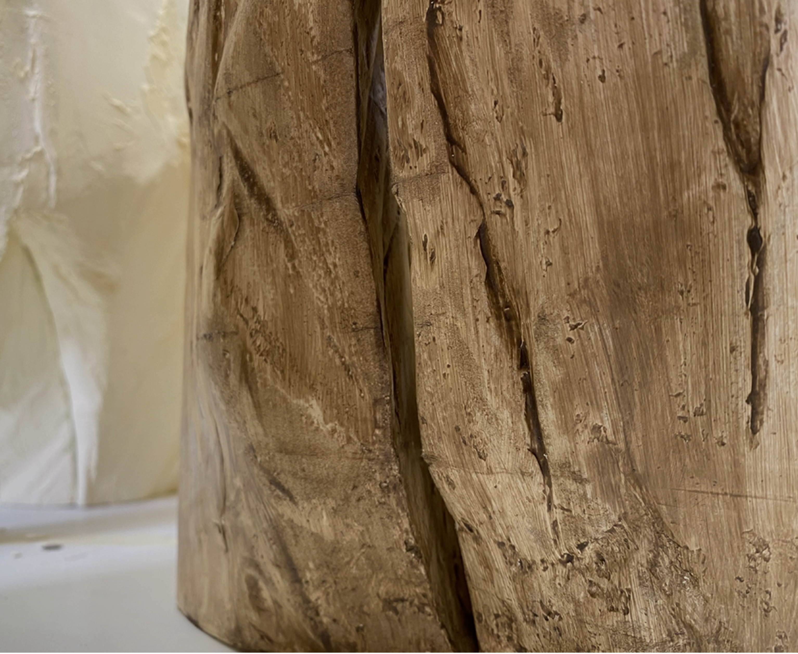

BRIEF
Design a fictional installation that reinterprets a land art masterpiece.
DESIGN METHODS
experience design, art direction, videomaking, maquette
SOLUTION
Inod: In The Wood is a sensory exhibition inspired by the work of Carl Andre. While Andre's piece allows visitors to walk around and explore a line of wooden modules, Inod offers them the opportunity to go inside the wood like insects and small creatures. The setup resembles a branch knot, and the experience is designed to engage all the senses, from sight to touch, smell, and hearing. Materials, textures, and lights accompany visitors on their journey.


PERSONAL CONTRIBUTION
I was responsible for the project's art direction. Furthermore, I curated the graphics, videos and photos.
VISITOR FLOW AND LIGHTING STUDIES
The project was developed around the path that visitors would follow inside the installation. Once the shape of the installation had been defined, visitor flows were studied and the structure of the glass ceiling was consequently designed to create lighting effects resembling seasonal changes. Colours and materials were tested on smaller physical samples, and the final results were presented in multiple drawings.

MAQUETTE
Particular attention was given to creating the exhibition maquette. As the main communication tool of the exhibition design, it conveyed all of its formal, material and lighting features. The process involved research, experimentation and several attempts, as well as careful documentation of the final results.
The final prototype was made out of polystyrene, plastered and painted to recreate the wooden aesthetics.




more details here
-> Project book